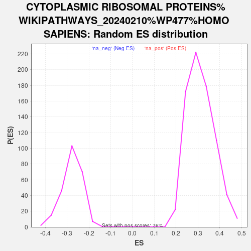

| | | Dataset | ranked_list_female |
| Phenotype | NoPhenotypeAvailable |
| Upregulated in class | na_neg |
| GeneSet | CYTOPLASMIC RIBOSOMAL PROTEINS%WIKIPATHWAYS_20240210%WP477%HOMO SAPIENS |
| Enrichment Score (ES) | -0.64875257 |
| Normalized Enrichment Score (NES) | -2.341284 |
| Nominal p-value | 0.0 |
| FDR q-value | 0.0 |
| FWER p-Value | 0.0 |
Table: GSEA Results Summary
 Fig 1: Enrichment plot: CYTOPLASMIC RIBOSOMAL PROTEINS%WIKIPATHWAYS_20240210%WP477%HOMO SAPIENS
Fig 1: Enrichment plot: CYTOPLASMIC RIBOSOMAL PROTEINS%WIKIPATHWAYS_20240210%WP477%HOMO SAPIENS
Profile of the Running ES Score & Positions of GeneSet Members on the Rank Ordered List
| SYMBOL | RANK IN GENE LIST | RANK METRIC SCORE | RUNNING ES | CORE ENRICHMENT | | 1 | RPS6KA1 | 1256 | 1.279 | -0.0701 | No |
| 2 | RPL36A | 3589 | 0.438 | -0.2363 | No |
| 3 | RPL37 | 3602 | 0.436 | -0.2291 | No |
| 4 | RPL26 | 3934 | 0.376 | -0.2468 | No |
| 5 | RPL11 | 4327 | 0.317 | -0.2702 | No |
| 6 | RPS24 | 4707 | 0.260 | -0.2937 | No |
| 7 | RPS3 | 5500 | 0.162 | -0.3499 | No |
| 8 | RPL41 | 5635 | 0.145 | -0.3572 | No |
| 9 | RPS4Y1 | 6017 | 0.107 | -0.3837 | No |
| 10 | RPS12 | 6209 | 0.087 | -0.3964 | No |
| 11 | RPL17 | 6248 | 0.084 | -0.3977 | No |
| 12 | RPL23 | 6573 | 0.056 | -0.4209 | No |
| 13 | RPS11 | 7104 | 0.015 | -0.4602 | No |
| 14 | RPS6KB2 | 7419 | -0.006 | -0.4836 | No |
| 15 | MRPL19 | 7790 | -0.037 | -0.5105 | No |
| 16 | RPS18 | 8426 | -0.094 | -0.5563 | No |
| 17 | RPL27A | 8524 | -0.104 | -0.5616 | No |
| 18 | RPLP1 | 8572 | -0.108 | -0.5631 | No |
| 19 | RPL15 | 8722 | -0.123 | -0.5719 | No |
| 20 | RPL39 | 8910 | -0.143 | -0.5832 | No |
| 21 | RPSA | 9063 | -0.157 | -0.5917 | No |
| 22 | RPS16 | 9300 | -0.187 | -0.6058 | No |
| 23 | RPS6 | 9586 | -0.224 | -0.6230 | No |
| 24 | RPS13 | 9662 | -0.234 | -0.6242 | No |
| 25 | RPL32 | 9676 | -0.237 | -0.6208 | No |
| 26 | RPL29 | 9782 | -0.251 | -0.6240 | No |
| 27 | RPL38 | 9788 | -0.252 | -0.6197 | No |
| 28 | RPS29 | 10058 | -0.292 | -0.6343 | No |
| 29 | RPL31 | 10252 | -0.326 | -0.6427 | Yes |
| 30 | RPL35A | 10270 | -0.330 | -0.6378 | Yes |
| 31 | RPL37A | 10274 | -0.330 | -0.6319 | Yes |
| 32 | RPL5 | 10278 | -0.331 | -0.6259 | Yes |
| 33 | RPS7 | 10441 | -0.359 | -0.6314 | Yes |
| 34 | RPL6 | 10478 | -0.367 | -0.6272 | Yes |
| 35 | RPL27 | 10538 | -0.379 | -0.6246 | Yes |
| 36 | RPL30 | 10566 | -0.387 | -0.6194 | Yes |
| 37 | RPL34 | 10576 | -0.390 | -0.6128 | Yes |
| 38 | RPL22 | 10613 | -0.396 | -0.6081 | Yes |
| 39 | RPS6KA2 | 10642 | -0.402 | -0.6028 | Yes |
| 40 | RPS3A | 10668 | -0.411 | -0.5970 | Yes |
| 41 | RPS17 | 10883 | -0.454 | -0.6045 | Yes |
| 42 | RPL21 | 11059 | -0.499 | -0.6083 | Yes |
| 43 | RPS27 | 11069 | -0.501 | -0.5997 | Yes |
| 44 | RPL18A | 11139 | -0.518 | -0.5952 | Yes |
| 45 | RPS20 | 11144 | -0.519 | -0.5858 | Yes |
| 46 | RPS23 | 11229 | -0.543 | -0.5820 | Yes |
| 47 | RPS8 | 11262 | -0.552 | -0.5741 | Yes |
| 48 | RPL4 | 11311 | -0.566 | -0.5671 | Yes |
| 49 | RPS27A | 11330 | -0.571 | -0.5578 | Yes |
| 50 | RPL23A | 11370 | -0.585 | -0.5499 | Yes |
| 51 | RPL28 | 11384 | -0.590 | -0.5398 | Yes |
| 52 | RPS6KA3 | 11389 | -0.592 | -0.5291 | Yes |
| 53 | RPL7A | 11403 | -0.597 | -0.5190 | Yes |
| 54 | RPL12 | 11449 | -0.611 | -0.5110 | Yes |
| 55 | RPL7 | 11476 | -0.619 | -0.5014 | Yes |
| 56 | RPS14 | 11555 | -0.643 | -0.4953 | Yes |
| 57 | RPS21 | 11612 | -0.662 | -0.4871 | Yes |
| 58 | RPS10 | 11642 | -0.673 | -0.4768 | Yes |
| 59 | RPS25 | 11800 | -0.741 | -0.4747 | Yes |
| 60 | RPL8 | 11941 | -0.805 | -0.4702 | Yes |
| 61 | RPS26 | 11993 | -0.828 | -0.4586 | Yes |
| 62 | RPS6KB1 | 12085 | -0.868 | -0.4492 | Yes |
| 63 | RPL19 | 12104 | -0.879 | -0.4342 | Yes |
| 64 | FAU | 12129 | -0.890 | -0.4194 | Yes |
| 65 | RPL14 | 12158 | -0.904 | -0.4047 | Yes |
| 66 | RPL36 | 12166 | -0.908 | -0.3883 | Yes |
| 67 | RPS28 | 12168 | -0.909 | -0.3715 | Yes |
| 68 | RPL13A | 12299 | -1.003 | -0.3625 | Yes |
| 69 | RPL35 | 12319 | -1.016 | -0.3450 | Yes |
| 70 | RPLP0 | 12378 | -1.058 | -0.3297 | Yes |
| 71 | RPS9 | 12440 | -1.103 | -0.3137 | Yes |
| 72 | RPL10 | 12588 | -1.218 | -0.3020 | Yes |
| 73 | RPL18 | 12660 | -1.283 | -0.2834 | Yes |
| 74 | RPL10A | 12683 | -1.298 | -0.2609 | Yes |
| 75 | RPL9 | 12706 | -1.331 | -0.2378 | Yes |
| 76 | RPLP2 | 12738 | -1.361 | -0.2147 | Yes |
| 77 | RPS19 | 12757 | -1.383 | -0.1903 | Yes |
| 78 | RPL13 | 12768 | -1.393 | -0.1651 | Yes |
| 79 | RPL3 | 12804 | -1.416 | -0.1414 | Yes |
| 80 | RPS5 | 12873 | -1.502 | -0.1185 | Yes |
| 81 | RPS15 | 12958 | -1.603 | -0.0949 | Yes |
| 82 | RPS2 | 13063 | -1.730 | -0.0705 | Yes |
| 83 | RPS4X | 13446 | -5.366 | 0.0008 | Yes |
Table: GSEA details [plain text format]

Fig 2: CYTOPLASMIC RIBOSOMAL PROTEINS%WIKIPATHWAYS_20240210%WP477%HOMO SAPIENS: Random ES distribution
Gene set null distribution of ES for CYTOPLASMIC RIBOSOMAL PROTEINS%WIKIPATHWAYS_20240210%WP477%HOMO SAPIENS